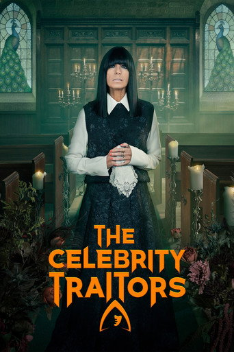
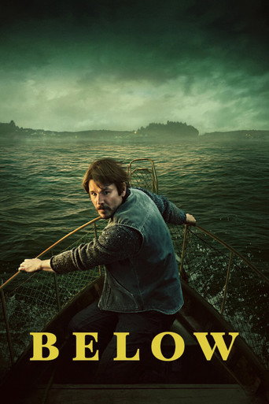
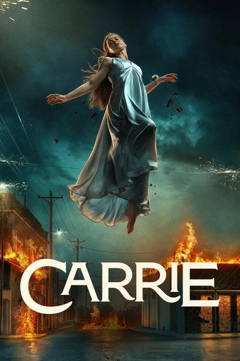
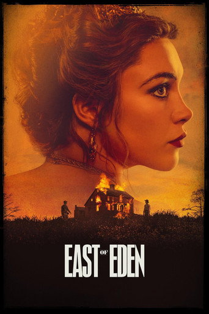
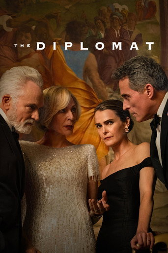
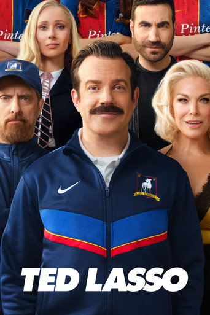
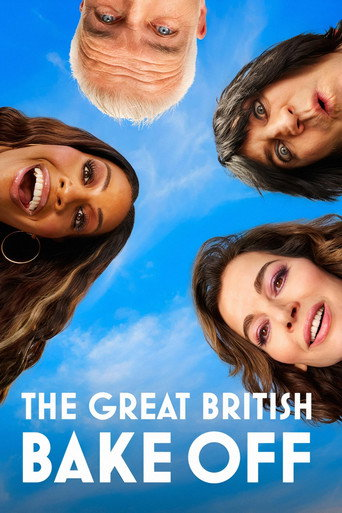
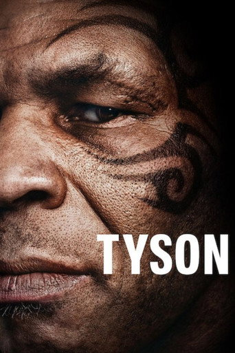
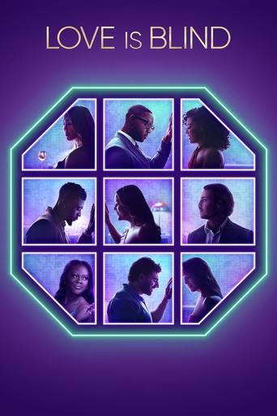
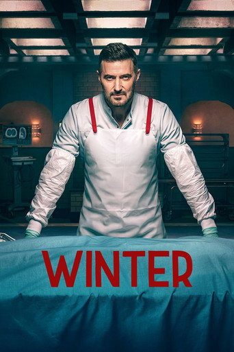

Claudia Winkleman hosts celebrities playing the murder-mystery game in a Scottish castle. Thursday's episode hit 10 million for the second time this series, five times the audience of ITV's Pride of Britain Awards.

Josh Hartnett plays a Newfoundland fisherman protecting his town from a sea creature. It grew in its first full week, and no Canadian Netflix original has had a bigger week.

Mike Flanagan's eight-part retelling of Stephen King's novel, with Summer H. Howell as Carrie and Samantha Sloyan as her mother. It was the most-streamed title in America in its first week.

Florence Pugh plays Cathy Ames in this adaptation of Steinbeck's novel. It has 25.3M views so far, and more people are starting the audiobook on Spotify.

Keri Russell returns as Ambassador Kate Wyler, who must stop the President (Emmy winner Allison Janney) and her own husband from stealing a Russian weapon. Critics say it is the show's best season.

Jason Sudeikis is back, now coaching a women's team. Viewing went up after the 7 Oct finale as people caught up.

Nigella Lawson joins Paul Hollywood as a judge, with Alison Hammond and Noel Fielding hosting. Tuesday's episode put on 200,000 viewers.

A four-part documentary on Mike Tyson's life, from Brooklyn to world heavyweight champion, directed by Floyd Russ. Critics call it gripping but say it adds little new.

The dating experiment where couples get engaged before they meet comes back with a new group of singles from Boston.

Richard Armitage plays an unusual forensic pathologist who helps the police crack hard cases, with Annabel Scholey as DI Lauren Bell. It is a British remake of the French series Balthazar.